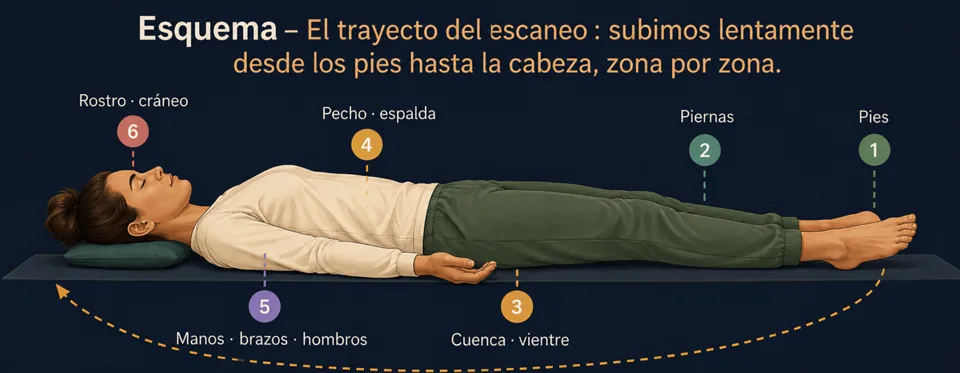

El escaneo corporal: la meditación que suelta el cuerpo
El escaneo corporal explicado paso a paso, con su esquema: el recorrido de pies a cabeza, qué hacer cuando no sientes nada y sus tres usos.
El escaneo corporal es la técnica de meditación más accesible: pasear la atención por el cuerpo y sentir lo que hay, sin cambiar nada. Relajación profunda, dormirse, tensiones del día — aquí tienes el recorrido completo, paso a paso.
¿Qué es el escaneo corporal?
El escaneo corporal es la más simple de las grandes técnicas de meditación: paseas la atención lentamente por el cuerpo, zona tras zona, y sientes lo que hay — calor, contacto, hormigueo, pesadez, o nada en absoluto. Eso es todo. No intentas relajarte: la relajación llega como subproducto, precisamente porque no la persigues.
Es la puerta de entrada ideal para quienes «piensan demasiado»: la atención tiene una ruta concreta que seguir, la mente tiene menos espacio para irse — y cuando se va, el cuerpo es un lugar sencillo al que volver.
El recorrido, paso a paso

- Instálate — sentado o tumbado (tumbado si el objetivo es dormir). Tres respiraciones amplias para preparar la escena.
- Empieza por los pies. Dedos, plantas, talones: ¿qué sientes, ahora mismo? ¿El tacto de los calcetines, un frescor, nada? «Nada» es una observación válida.
- Sube despacio: tobillos, gemelos, rodillas, muslos… luego caderas, vientre, pecho — nota la respiración al pasar —, espalda, hombros.
- Las zonas parlanchinas. Mandíbula, frente, nuca, hombros: ahí suele alojarse el día. No fuerces nada — posar la atención basta; la soltura llega sola.
- Termina con el cuerpo entero, sentido de una pieza, dos o tres respiraciones. Luego abre los ojos — o deja que el sueño termine el trabajo.
Tres usos del escaneo corporal
- Relajación profunda — al final del día, 10 a 20 minutos tumbado: el cuerpo se asienta capa a capa, como arena que baja en el agua.
- Dormirse — el escaneo es el corazón de las meditaciones nocturnas: empezado en la cama, rara vez termina antes que el sueño.
- Las tensiones del día — versión exprés de cinco minutos, sentado, para localizar dónde se crispó el día y dejar bajar los hombros.
En Awakening Minds, el escaneo corporal guiado es una de las sesiones de la categoría Aprendizaje — gratis, sin conexión, con la voz y la velocidad que elijas.
Preguntas frecuentes
¿Cuánto dura un escaneo corporal?
De 5 minutos (versión exprés sentado) a 20-30 minutos para la relajación profunda tumbado. Para empezar, 10 minutos guiados son más que suficientes.
¿Sentado o tumbado?
Tumbado para la relajación profunda y la noche; sentado para mantenerte alerta durante el día. La regla: tumbado si dormirse es aceptable, sentado si no.
¿Por qué me duermo cada vez?
¡Porque funciona! Si dormir no es el objetivo, practica sentado, de día, con los ojos entreabiertos — y guarda la versión tumbada para la noche.
¿Prefieres practicar antes que leer?
Todo lo que describe este artículo se practica en Awakening Minds, una app de meditación gratis: 149 meditaciones guiadas en español — dormir, respiración guiada, mundos inmersivos — sin suscripción, sin anuncios, sin cuenta y sin conexión.
✦ Descubre la app gratisSigue leyendo
Meditación para dormir: concilia el sueño más fácil
Por qué el sueño huye cuando lo persigues, la postura nocturna, la respiración 4-7-8 y cómo actúa de verdad una meditación guiada para dormir.
La postura de meditación: 4 posiciones válidas
Silla, piernas cruzadas, seiza o tumbado: las 4 posiciones de meditación con esquemas, y los 7 puntos de una postura digna y relajada.